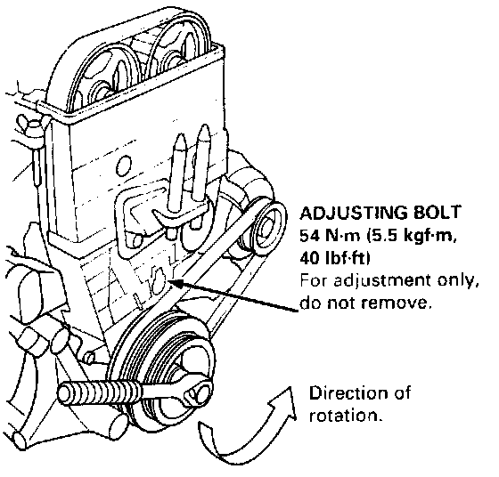

Timing Belt: Adjustments

Tension Adjustment
CAUTION: Always adjust timing belt tension with the engine cold.
NOTE:
- The tensioner is spring-loaded to apply proper tension to the belt automatically after making the following adjustment.
- Always rotate the crankshaft counterclockwise when viewed from the pulley side. Rotating it clockwise may result in improper adjustment of the belt tension.
1. Remove the cylinder head cover.
2. Set the No. 1 piston at TDC.
3. Rotate the crankshaft 5 - 6 revolutions to set the belt.
4. Set the No.1 piston at TDC.
5. Loosen the adjusting bolt 1/2 turn (180°) only.
6. Rotate the crankshaft counterclockwise 3-teeth on the camshaft pulley.
7. Tighten the adjusting bolt to the specified torque.
8. After adjusting, retorque the crankshaft pulley bolt to 177 N.m (18.0 kgf.m, 130 lbf.ft).